Flow Analysis
Se eliminó la transcripción manual de datos y la espera en recepción, reduciendo el tiempo de check-in en un 95% mediante la implementación de acceso por QR y registro automatizado
Task Flow
Before
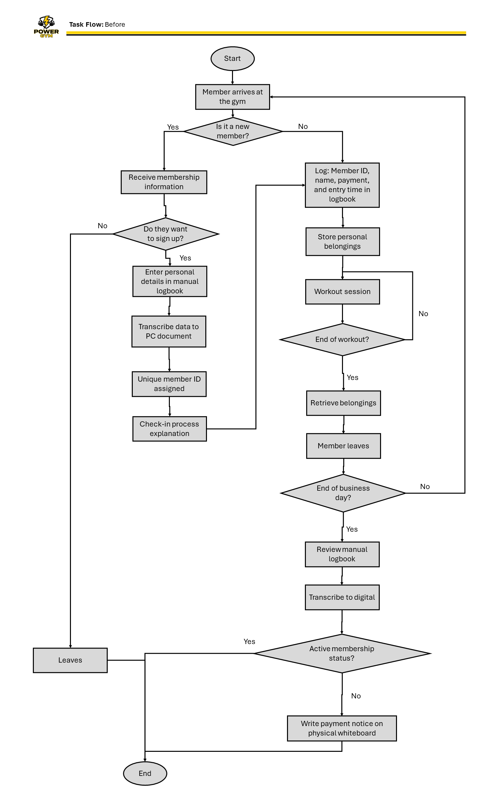
Process management based on manual logs and repetitive data transcription tasks.
After
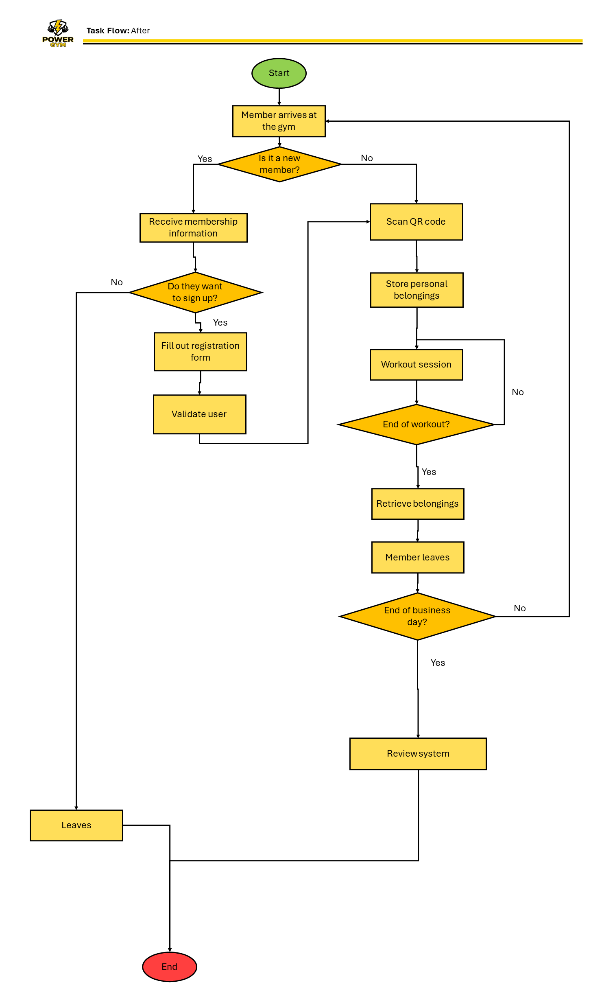
Optimized digital ecosystem with QR validation, eliminating manual administrative overhead.
User Flow - Gym Member
Before
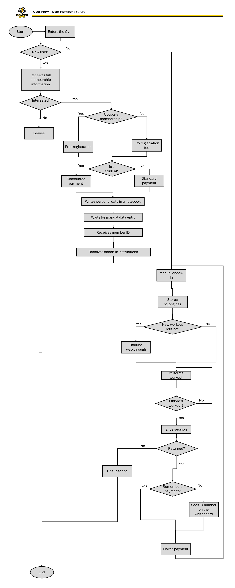
Offline process dependent on constant human validation for payments and access control.
After
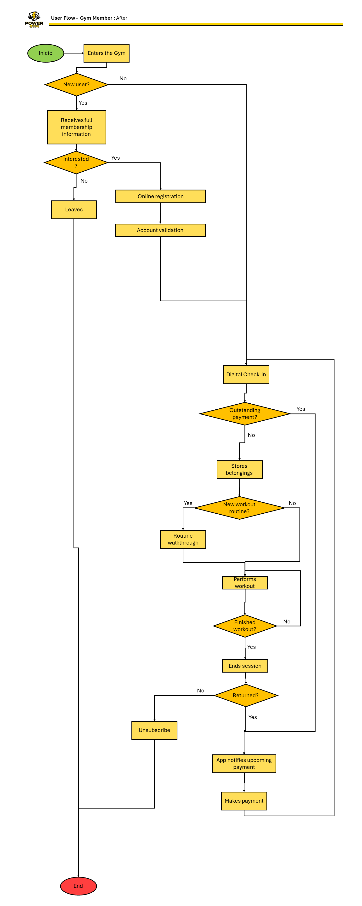
Process automation with real-time membership validation and centralized data management.
User Flow - Gym Staff
Before
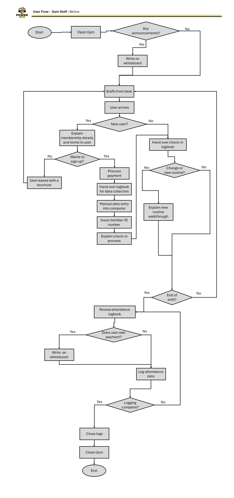
Analog-based operations with heavy administrative workload, including manual attendance tracking and physical notice boards.
After
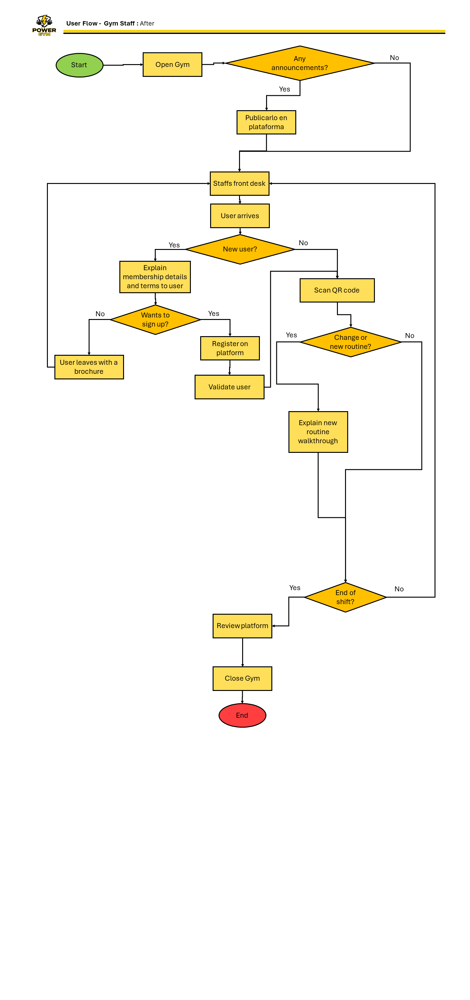
Streamlined operations via a digital platform, automating access control and real-time announcement management.
User Persona
User models grounded in data collected during the research phase to guide design decisions centered on real-world needs.
User Persona - Gym Member
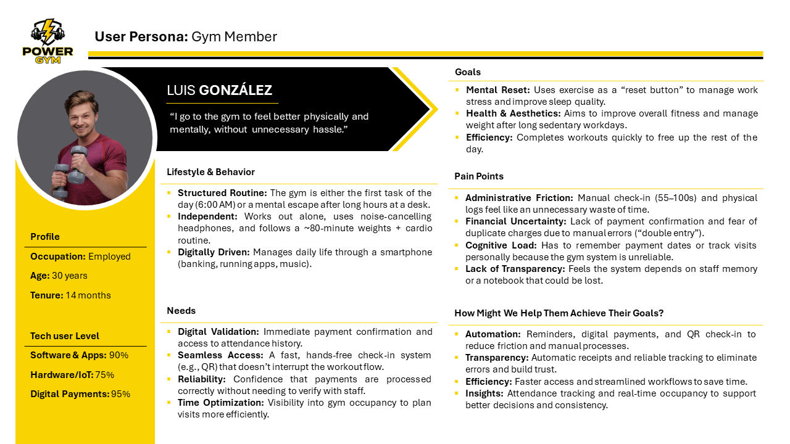
Comprehensive end-user profile focusing on efficiency and technology adoption. Luis represents the member archetype seeking to eliminate administrative friction through digital solutions like QR check-ins, allowing him to focus on his fitness goals without the burden of slow, manual processes.
User Persona - Gym Staff
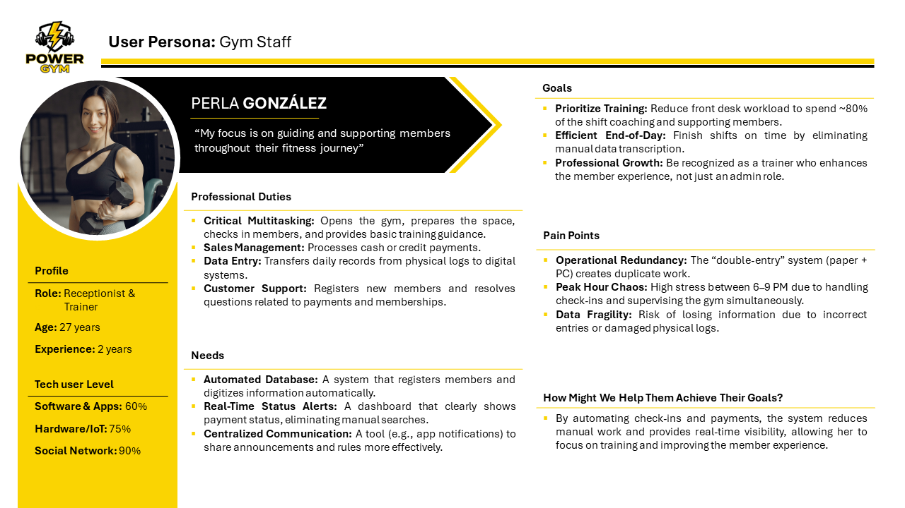
Internal user profile (Staff) showcasing the dual role of receptionist and trainer. Perla represents the critical need to automate redundant administrative tasks, such as double data entry, to reclaim time for direct member support and fitness coaching.
User Stories
Key functionality defined from the perspective of members and staff, focused on resolving friction points through digital automation.
Design System
Documentation of styles and reusable components under a modular architecture for a cohesive and scalable interface.
Color Systems
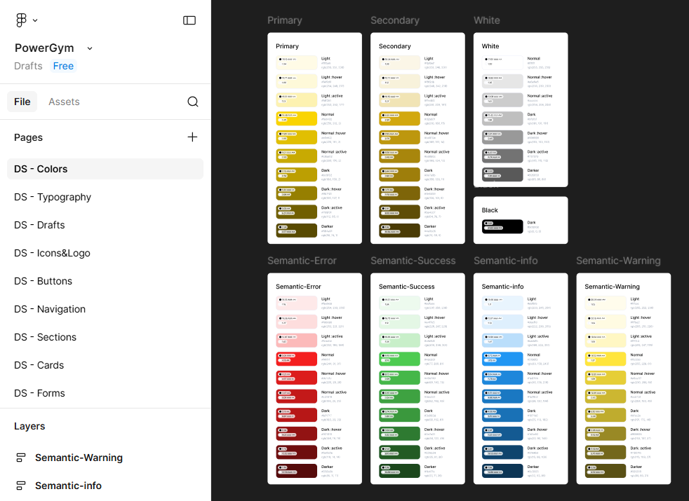
Expanded color palette and semantic color system. Each tone was selected following accessibility standards (WCAG) and organized into different interaction states to ensure an intuitive and accessible interface
Iconography & Brand Assets
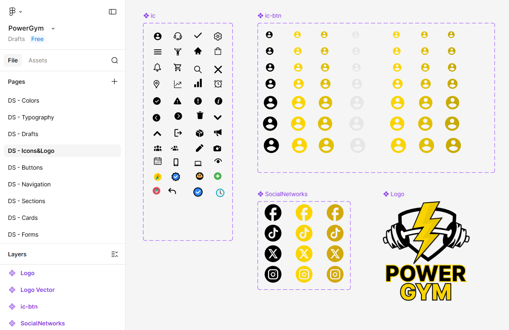
Development of a visual asset library featuring technical iconography, social button variants, and the corporate logo. Each element is designed as a reusable component, enabling fast development integration while maintaining brand visual fidelity across every system touchpoint
Typography System
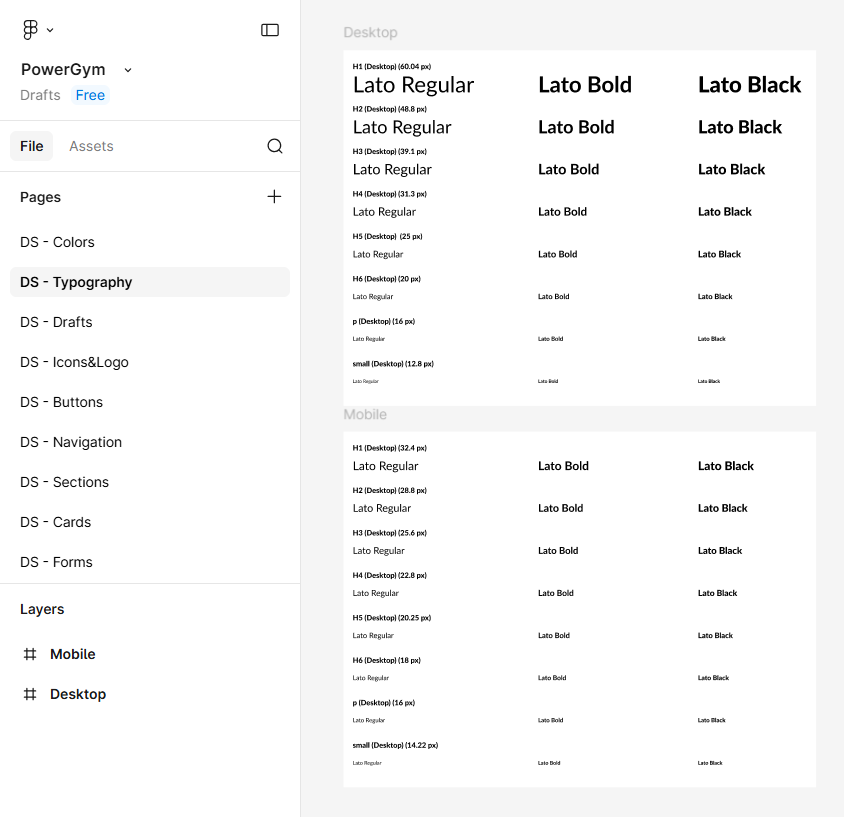
Implementation of a typographic scale based on the Lato family. Clear hierarchies were defined for both desktop and mobile devices, ensuring readability and a consistent visual structure across the platform through the use of specific styles for headings, body text, and labels
Grid System & Layout Architecture
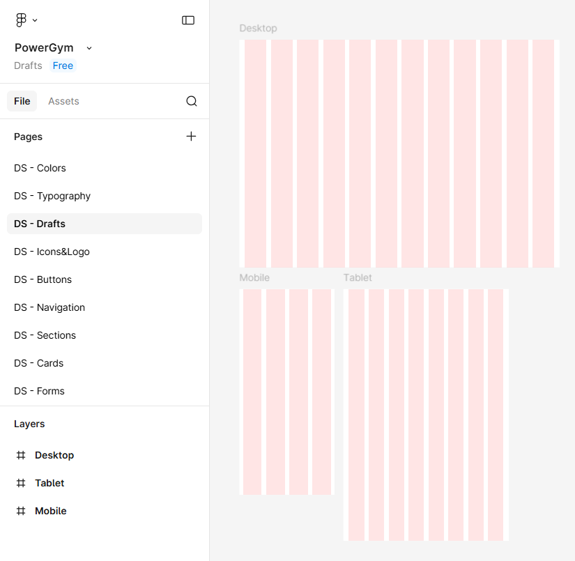
Responsive layout structure designed to ensure mathematical and visual alignment across any device. The system utilizes a 12-column grid for desktop, 8 for tablet, and 4 for mobile, enabling fluid and coherent content distribution throughout the digital ecosystem
Interactive Button
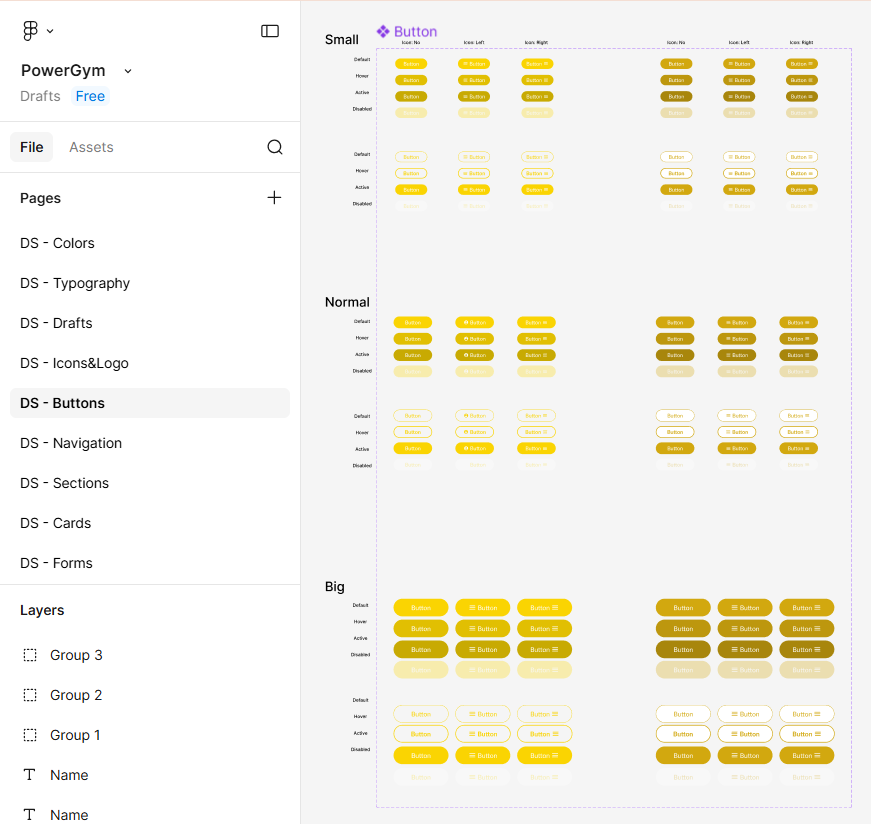
Design of a highly scalable and modular button system. The structure defines variants by size (Small, Normal, Big), hierarchy (Primary, Secondary, Outline), and interaction states (Default, Hover, Active, Disabled). This technical documentation ensures clean code implementation and a predictable user experience across the entire interface
System Notifications & Modals
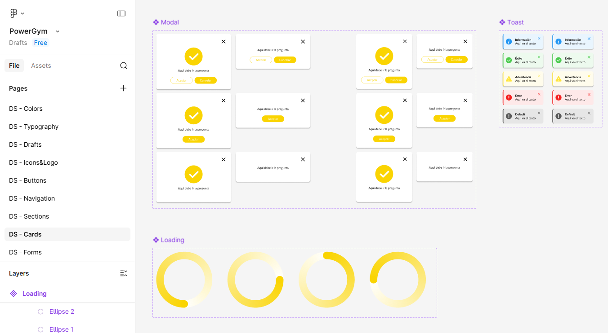
Design of feedback components to enhance the user experience. Includes confirmation modals, 'Toast' notifications with semantic variants, and consistent loading states. These elements ensure the user is always informed about the status of their actions within the platform
High-Fidelity Prototype
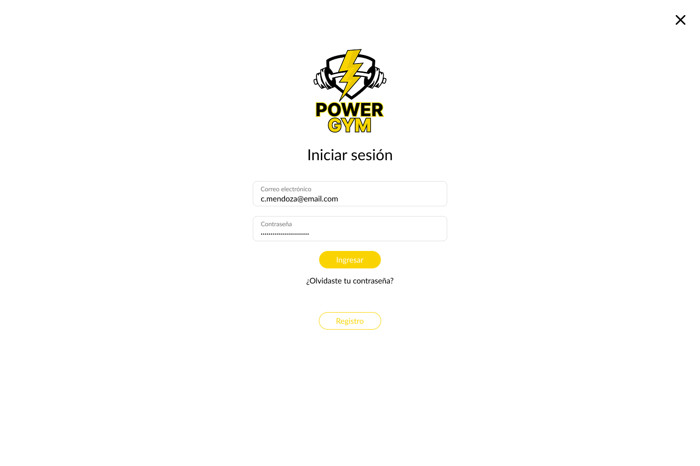
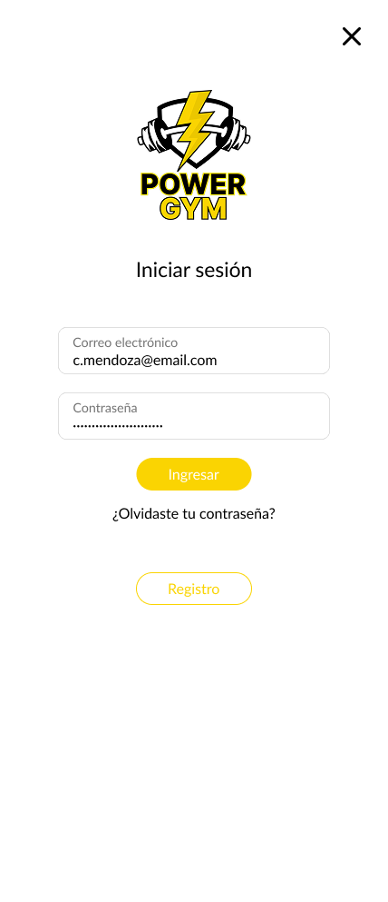
High-fidelity interactive prototype linked directly from Figma. This simulation allows for the validation of user flows and usability through dynamic components and advanced transitions that faithfully replicate the final product experience
Staff Management Interface
Member Management Interface
Objetivos Cumplidos
Digitalización del 100% de registros y reducción de tiempos de espera.
Sugerencias
Implementar módulos de nutrición y pagos recurrentes automáticos.
System Usability Scale (SUS) Analysis
El prototipo obtuvo una calificación de 85/100, situándose en el rango de "Excelente".
Objetivos de Negocio Logrados
- Eficiencia Operativa: Reducción del tiempo de registro manual (de 100s a menos de 20s).
- Cero Papelería: Digitalización total de vouchers y contratos.
- Control de Aforo: Monitoreo en tiempo real de usuarios en el gimnasio.
Sugerencias Estratégicas
- Escalabilidad: Integrar una API de pasarela de pagos para cobros automáticos.
- Retención: Sistema de gamificación por asistencia constante.
- Hardware: Integrar lectores biométricos (huella o QR) vinculados a la App.